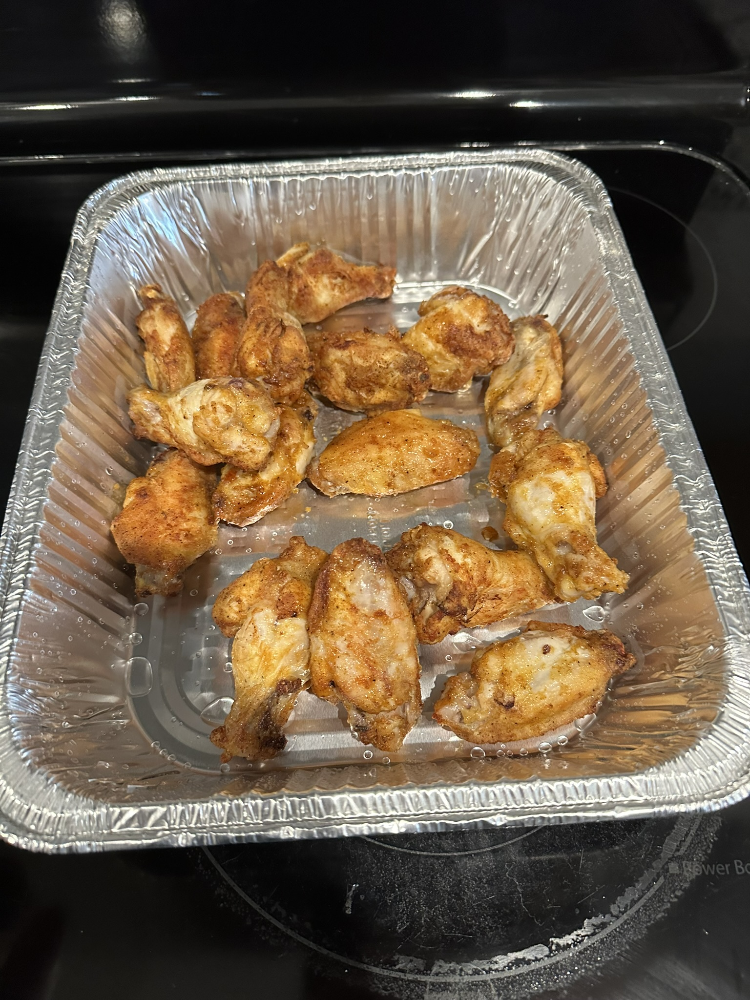
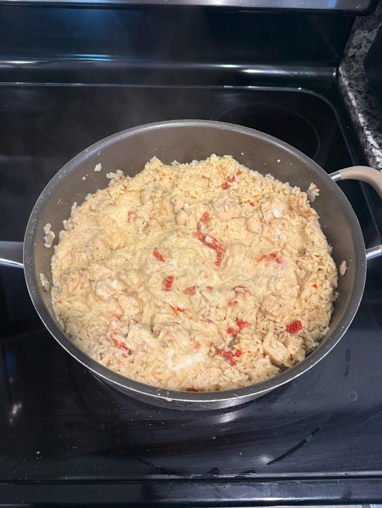
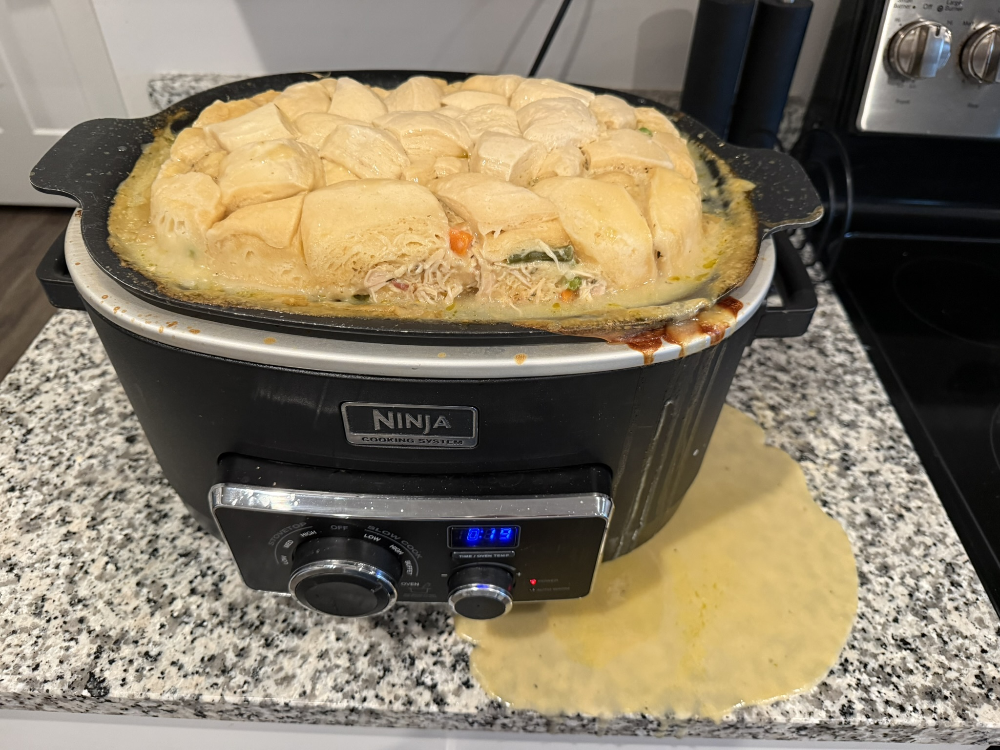

Welcome to my Odin Recipes project! This website was created as part of The Odin Project and features three of my favorite recipes. Through this project, I’m practicing the HTML skills I’ve learned so far while sharing a few meals I enjoy making.


